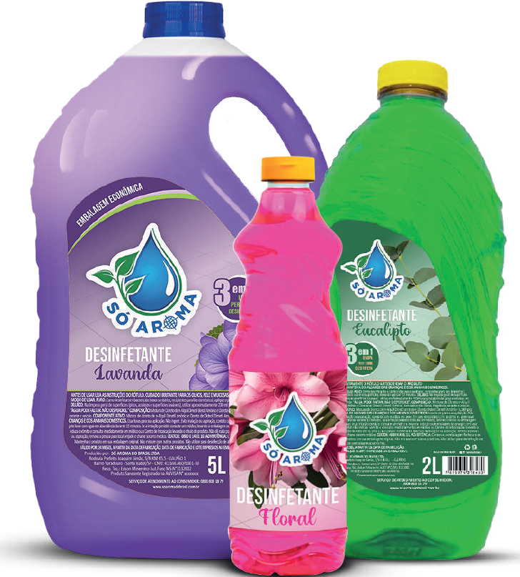

Desinfetante
Esse desinfetante é a escolha perfeita para quem busca um ambiente limpo e perfumado. Com opções de fragrâncias refrescantes como eucalipto, floral e lavanda, ele elimina impurezas e deixa um aroma agradável que dura horas. Disponível em frascos de 500ml, 1L, 2L e 5L, é ideal tanto para pequenas limpezas quanto para grandes ambientes, garantindo eficiência e um toque de frescor em cada aplicação.
Disponível em embalagens de: 500ml, 1L, 2L e 5L.
Downloads
